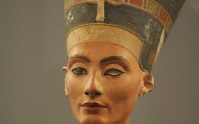
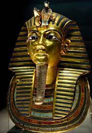

La pyramide de Khéops ou grande pyramide de Gizeh est un monument construit par les Égyptiens de l'Antiquité, formant une pyramide à base carrée. Tombeau présumé du pharaon Khéops, elle fut édifiée il y a plus de 4 500 ans, sous la IVe dynastie1, au centre du complexe funéraire de Khéops se situant à Gizeh en Égypte. Elle est la plus grande des pyramides de Gizeh.
Elle était considérée dans l'Antiquité comme la première des Sept Merveilles du monde. Seule des Sept Merveilles du monde à avoir survécu jusqu'à nos jours, elle est également la plus ancienne. Durant des millénaires, elle fut la construction humaine de tous les records : la plus haute, la plus volumineuse et la plus massive.
Le tombeau, chef-d'œuvre de l'Ancien Empire de l'architecte Hémiounou, est la consécration et l'aboutissement de toutes les techniques architecturales mises au point depuis la création de l'architecture monumentale en pierre de taille par Imhotep pour la pyramide de son souverain Djéser, à Saqqarah. Les nombreuses particularités architectoniques et les exploits atteints pour sa construction en font une pyramide à part qui ne cesse de questionner la recherche.
nefertiti

Néfertiti (dont le nom signifie « la belle est venue » ou « la parfaite est arrivée ») est une Reine d'Égypte, grande épouse royale d'Akhenaton, l'un des derniers rois de la XVIIIe dynastie. Elle a vécu aux environs de 1370 à 1333 av. J.-C.
Son nom était vraisemblablement prononcé naftíta, d’après les transcriptions cunéiformes de l’époque et les évolutions phonétiques de la langue égyptienne : un -r en fin de syllabe ainsi que le suffixe -t final du féminin (dans nfrt : « belle ») s’étaient amuïs en moyen égyptien mais restaient écrits. Dans un état antérieur de la langue, son nom se serait prononcé nafratíta1.
Sa beauté est légendaire et il est certain qu’elle a exercé un rôle politique et religieux important pendant la période amarnienne. En effet, lorsqu'une équipe d'archéologues américains entreprit récemment la reconstitution virtuelle des parois du temple d'Aton à Karnak à partir de talatates — un gigantesque puzzle de plus de six mille blocs en grès retirés du IXe pylône —, elle a eu la surprise de constater que les représentations de Néfertiti étaient plus nombreuses que celles d’Akhenaton, son royal époux. Ailleurs, la reine est figurée dans la pose traditionnelle de pharaon châtiant les ennemis de l'Égypte, ou officiant aux côtés du roi devant leur dieu Aton. D’autres reliefs montrent le couple royal et les petites princesses dans leur intimité familiale. Toutes ces scènes sont la preuve que la reine exerçait un pouvoir considérable, l'art officiel n’ayant jamais montré auparavant de scènes similaires.
Il n'est pas établi que Néfertiti ait survécu à Akhenaton. Certains[Qui ?] égyptologues ont conjecturé cependant qu’à la fin du règne, elle aurait été corégente d’Akhenaton sous le nom de Smenkhkarê, dont on pense en général qu'il s’agit d’un jeune frère d'Akhenaton.
Toutânkhamon

Toutânkhamon (né vers -1345, mort vers -1327) est le onzième pharaon de la XVIIIe dynastie (Nouvel Empire). Selon les dernières études génétiques, il est le fils d'Akhenaton et de la propre sœur de ce dernier, dont l'identité est inconnue, mais désignée comme Younger Ladyn 3, dont la momie est répertoriée KV35YL2. Manéthon l'appelle Chebres.
On ne sait pas pourquoi ce n'est pas lui qui succède directement à son père. Peut-être est-ce à cause de son trop jeune âge à l'époque, environ neuf ans (on trouve aussi cinq ou six ans), dans une période de troubles, de remise en question des religions, de bouleversement des valeurs traditionnelles et de risque de guerre avec les Hittites. Il règne jusqu'à l'âge de dix-huit ou dix-neuf ans (certains spécialistes, comme Marc Gabolde et Edward Frank Wente, disent vingt ans). Son règne est situé entre les années -1336 / -1335 et -13271.
De son temps, Toutânkhamon n'était pas considéré comme un grand pharaon, en raison de son court règne. Il doit sa célébrité à la découverte de sa sépulture par l'archéologue britannique Howard Carter le 4 novembre 1922 et au fabuleux trésor qu'elle recèle. La notoriété de la découverte augmenta grâce à une légende reprise par la presse de l'époque et faisant état d'une malédiction du pharaon.